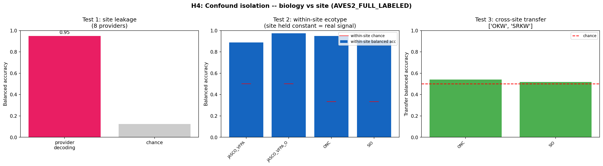
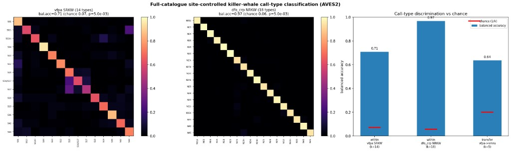
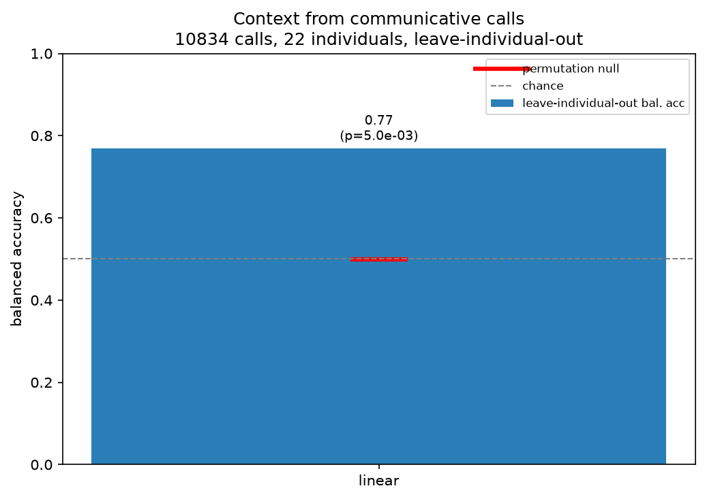
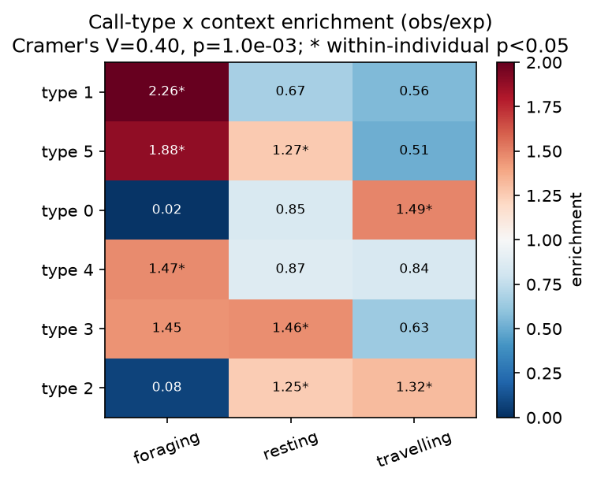
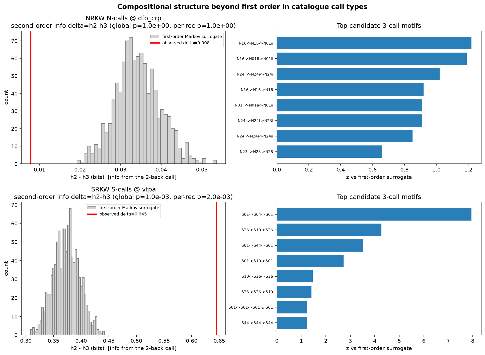
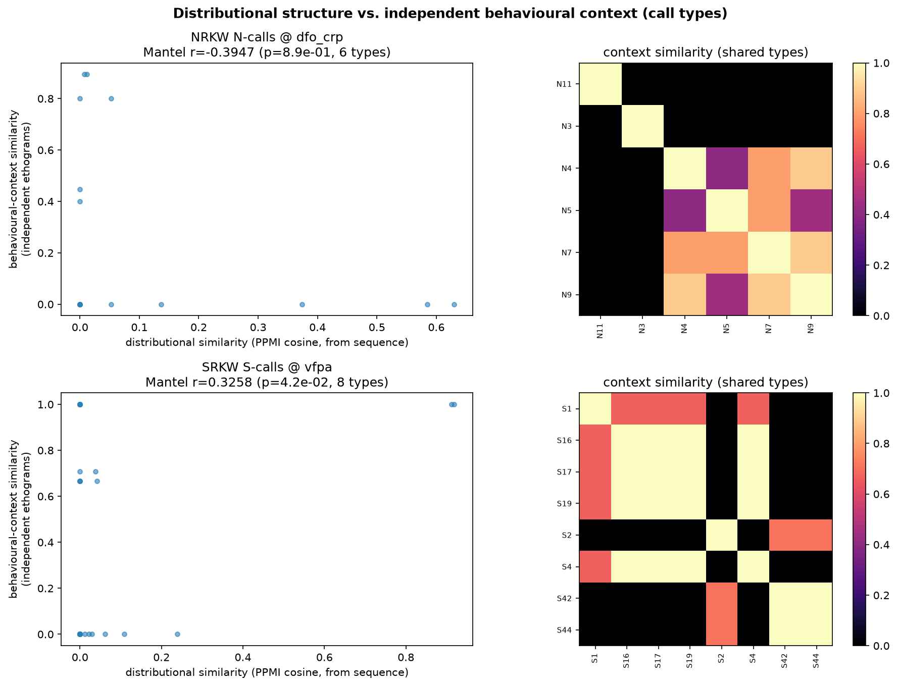
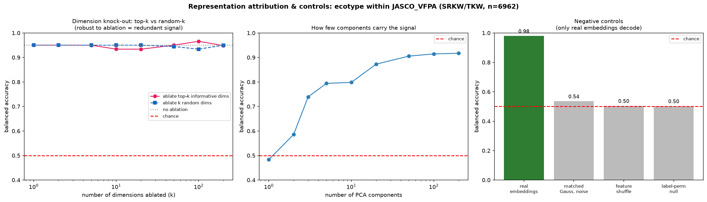
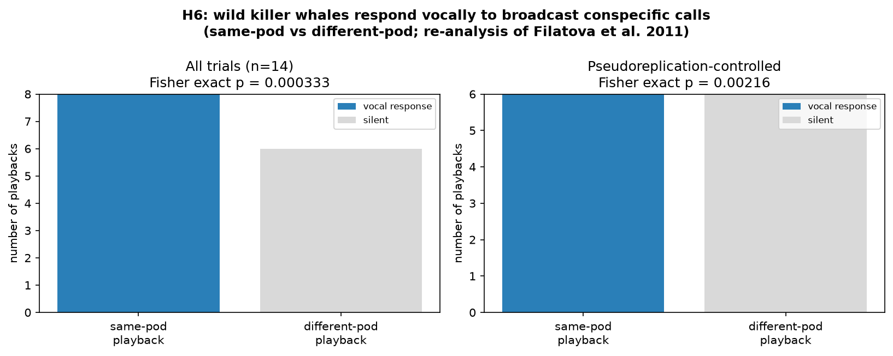

A reproducible, fully non-invasive pipeline for killer-whale (Orcinus orca) call structure, behavioural context, and playback-response analysis from public recordings.
One frozen audio foundation model (AVES2) runs unchanged across every analysis; the contribution is the rigour around it — measuring the recording-site shortcut that fools naive probes, and reporting only what survives explicit null baselines.
A frozen model “decodes ecotype” at 0.91 pooled — but hold out a whole recording site and it collapses to 0.23 (chance 0.25), while the site itself decodes at 0.948. The confound is measured instead of hidden.
Within each of five fixed recording sites the embeddings still separate ecotypes — the hydrophone never changes, so that signal has to be the whale.
Catalogue call types are recovered within a site (14 SRKW types 0.71; 18 NRKW types 0.97) and — unlike ecotype — transfer to an independent site (0.64; 0.83 on unambiguous types): the control ecotype failed.
On animal-borne tags, communicative calls decode movement-defined context (foraging vs not 0.77; three-way 0.58) with every individual held out, and specific call types occur in specific contexts (V=0.40). Controls rule out call rate and loudness as the explanation.
Calls don’t come at random: one call predicts the next, and Southern-Resident sequences carry information a first-order model can’t explain (candidate phrase S01→S04→S01). A prerequisite for combinatorial coding — not meaning.
Re-analysis of a published playback: free-ranging whales replied to same-pod broadcasts (6/6) and stayed silent to different-pod ones (0/6), naive animals — and the model recovers the dialect call types that drive it (purity 0.439 vs 0.05 null). The experiment is prior work; the response tracks dialect, not content.
Generated by the scripts in the repository; full metrics live in reports/ and reproduction status in the environment manifest.








Type or pick a plain-English context, let the demo assemble a K-call phrase, then hear it as reusable real recordings, a synthetic orca-like sketch, or both. The human text is a clear analogy for the viewer; the scientific boundary stays explicit.
Build a playback-ready stimulus set, inspect the evidence attached to it, and draft a conservative field protocol with controls, response windows, and stop rules.
Use Download JSON for the full randomized plan. Preview only when needed.
Archival recordings can characterise call structure and its confounds. What an archive cannot do — even in principle — is measure how a whale responds to a signal deliberately broadcast to it. That needs a controlled in-situ playback with a permitted field collaborator. The analysis half is already built.
Clone it, install the analysis extras, run the tests, and reproduce the playback-response statistic from the committed trial table:
git clone https://github.com/ladyFaye1998/OrcaDolittle
cd OrcaDolittle
python -m pip install -e ".[dev,analysis]"
python -m pytest -q
python scripts/run_playback_response_stats.pyFor permitted playback or biologging studies, include the study population, permit status, season timing, and response measures.
A quick look at what’s inside the corpus, right here on the page. The full recordings live in open repositories (linked below) — nothing is private or upon-request.
Data are public: DCLDE 2026 (NOAA/NCEI), the DTAG archive (Zenodo, CC-BY), and the FEROP catalogue. Code and the full bibliography are in the repository.
Palmer, K. J., et al. (2025). A public dataset of annotated Orcinus orca acoustic signals for detection and ecotype classification. Scientific Data 12:1137.
Hagiwara, M. (2023). AVES: animal vocalization encoder based on self-supervision. ICASSP 2023.
Chen, S., et al. (2022). BEATs: audio pre-training with acoustic tokenizers. arXiv.
Ford, J. K. B. (1989). Acoustic behaviour of resident killer whales off Vancouver Island, British Columbia. Canadian Journal of Zoology 67:727–745.
Foote, A. D., Osborne, R. W., Hoelzel, A. R. (2008). Temporal and contextual patterns of killer whale call type production. Ethology 114:599–606.
Filatova, O. A., et al. (2015). Cultural evolution of killer whale calls. Behaviour 152:2001–2038.
Yurk, H., et al. (2002). Cultural transmission within maternal lineages: vocal clans in resident killer whales in southern Alaska. Animal Behaviour 63:1103–1119.
Riesch, R., Ford, J. K. B., Thomsen, F. (2008). Whistle sequences in wild killer whales. J. Acoust. Soc. Am. 124:1822–1829.
Filatova, O. A., Fedutin, I. D., Burdin, A. M., Hoyt, E. (2011). Responses of Kamchatkan fish-eating killer whales to playbacks of conspecific calls. Marine Mammal Science 27:E26–E42.
Far East Russia Orca Project (FEROP). Catalogue of Kamchatkan killer whale calls.
Holt, M. M., Tennessen, J. B., et al. (2024). Calibrated movement data and variables. Zenodo, doi:10.5281/zenodo.13308835.
Tennessen, J. B., et al. (2019). Hidden Markov models reveal temporal patterns and sex differences in killer whale behavior. Scientific Reports 9:14951.
Wilson, R. P., et al. (2006). Moving towards acceleration for estimates of activity-specific metabolic rate (ODBA). J. Animal Ecology 75:1081–1090.
Berthet, M., Surbeck, M., Townsend, S. W. (2025). Extensive compositionality in the vocal system of bonobos. Science 388:104–108.
Girard-Buttoz, C., …, Crockford, C. (2025). Versatile use of chimpanzee call combinations promotes meaning expansion. Science Advances 11:eadq2879.
Sharma, P., et al. (2024). Contextual and combinatorial structure in sperm whale vocalisations. Nature Communications 15:3617.
Stowell, D. (2022). Computational bioacoustics with deep learning. PeerJ 10:e13152.
Ghani, B., et al. (2023). Global birdsong embeddings enable superior transfer learning. Scientific Reports 13:22876.
Kershenbaum, A. (2024). Why Animals Talk. Penguin Press.
Sayigh, L. S., et al. (2025). Widespread sharing of stereotyped non-signature whistle types by wild dolphins. bioRxiv.
Selbmann, A., et al. (2026). Aversive behavioural responses of killer whales to sounds of long-finned pilot whales. Scientific Reports 16:4716.
Bowers, M. T., et al. (2018). Selective reactions to different killer whale call categories in two delphinid species. J. Experimental Biology 221:jeb162479.
Miller, P. J. O., et al. (2004). Call-type matching in vocal exchanges of free-ranging resident killer whales. Animal Behaviour 67:1099–1107.
Robinson, D., et al. (2024). NatureLM-audio: an audio-language foundation model for bioacoustics. arXiv:2411.07186.